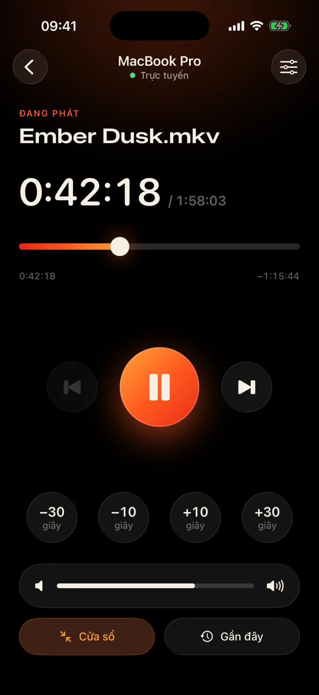
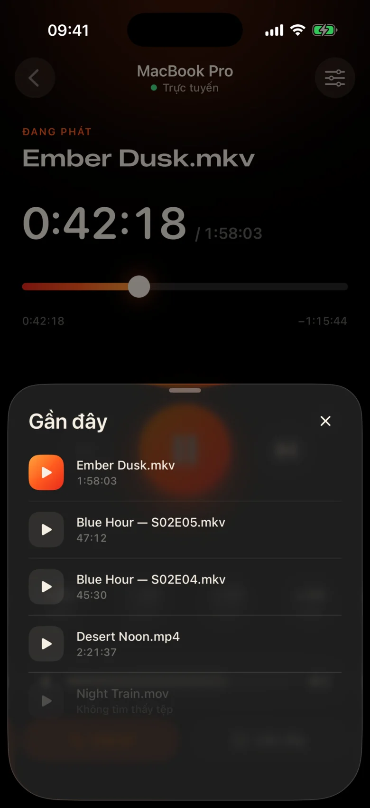
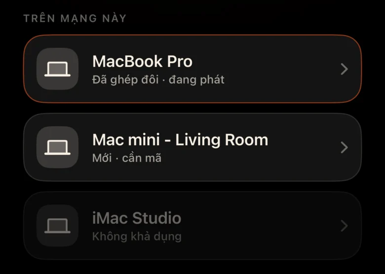
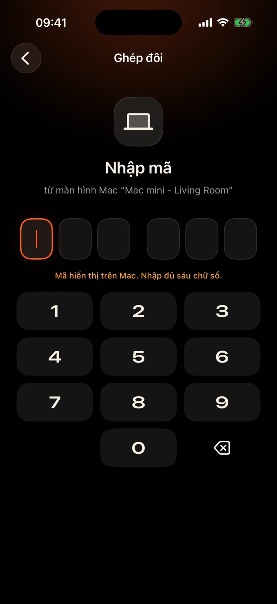

Mac ở phía bên kia phòng
Nó được cắm vào máy chiếu cạnh tường. Mỗi lần tạm dừng có nghĩa là phải đứng dậy, tìm bàn di chuột trong bóng tối và nheo mắt nhìn vào thanh điều khiển nhỏ.
Kinrox: nhấn tạm dừng trên điện thoại trên tay.
Kinrox phát bất kỳ video nào trên Mac của bạn — và biến iPhone của bạn thành điều khiển từ xa. MacBook trên máy chiếu, bạn trên ghế: tạm dừng, tua lại 10 giây, giảm âm lượng hoặc bắt đầu tập tiếp theo mà không cần rời khỏi chăn.


Nó được cắm vào máy chiếu cạnh tường. Mỗi lần tạm dừng có nghĩa là phải đứng dậy, tìm bàn di chuột trong bóng tối và nheo mắt nhìn vào thanh điều khiển nhỏ.
Kinrox: nhấn tạm dừng trên điện thoại trên tay.
Những tiếng thì thầm trong một cảnh, vụ nổ ở cảnh tiếp theo - và ai đó đã ngủ ở phòng bên cạnh.
Kinrox: thanh trượt âm lượng ngay dưới ngón tay cái của bạn.
Bảng điều khiển web có địa chỉ IP và mật khẩu, tab trình duyệt chuyển sang chế độ ngủ, các nút dành cho bàn làm việc - không dành cho ghế dài.
Kinrox: tự tìm Mac của bạn, ghép nối với một mã.

Các mục tiêu lớn, chủ đề ấm áp tối tăm và một cú chạm nhẹ vào mỗi lần nhấn. Bạn có thể sử dụng nó mà không cần rời mắt khỏi bộ phim.
Mọi nút đều đủ lớn để bấm dễ dàng ngay cả khi đang buồn ngủ.
Bỏ lỡ một dòng? Một lần nhấn trở lại. Bỏ qua phần giới thiệu với hai.
Âm lượng riêng của Kinrox, từ 0 đến 100. Âm lượng hệ thống của Mac không bị ảnh hưởng.
Tệp trước và tệp tiếp theo từ cùng một thư mục, theo thứ tự Finder.
Chọn nội dung bạn đã xem trước đó — nội dung đó sẽ mở trên Mac.
Kéo dòng thời gian tới bất kỳ thời điểm nào, chuyển toàn màn hình từ ghế dài.
Không có địa chỉ IP, không có mật khẩu, không có tài khoản. Sau mã đầu tiên, iPhone của bạn sẽ tự kết nối lại.
Kéo tệp vào Kinrox hoặc nhấn ⌘ O. Máy chủ từ xa được bật theo mặc định.
Kinrox tự hiển thị khi cả hai thiết bị đều sử dụng cùng một Wi-Fi.

Mac hiển thị mã tồn tại trong hai phút. Ba lần thử sai và nó đã biến mất.


Alex’s iPhone muốn điều khiển Kinrox. Nhập mã này trên điện thoại.
 Mã hết hạn sau 1:47
Mã hết hạn sau 1:47
Video là giao diện. Một lớp kính mỏng xuất hiện khi bạn cần và ẩn đi sau ba giây.

Được xây dựng trên libmpv, động cơ đằng sau mpv và IINA. Chọn âm thanh và phụ đề được nhúng hoặc bên ngoài. VideoToolbox xử lý giải mã phần cứng.
Kinrox sắp xếp các video trong thư mục và bắt đầu video tiếp theo khi một tập kết thúc - “2” trước “10”, giống như Finder.
Bàn phím ⏯ phím, Trung tâm điều khiển và Điều khiển đang phát Kinrox. Tối đa 20 tệp gần đây đang chờ trên màn hình bắt đầu.
Mac và iPhone trao đổi lệnh phát lại trực tiếp qua mạng cục bộ của bạn. Video của bạn vẫn ở trên Mac.
Khám phá qua Bonjour, chỉ kết nối từ mạng con của riêng bạn. Địa chỉ công cộng và di động đều bị từ chối.
Mỗi lệnh truyền đi trong một kênh được mã hóa. Mã thông báo ghép nối trực tiếp trong Chuỗi khóa trên cả hai thiết bị.
X25519HKDF-SHA256ChaCha20-Poly1305Không có tài khoản hoặc phân tích sử dụng. Mac kiểm tra nguồn cấp dữ liệu cập nhật công khai hàng ngày mà không cần mã định danh duy nhất hoặc hồ sơ hệ thống. Trang web này không có phân tích hoặc cookie.
Điều khiển từ xa nhìn thấy tiêu đề và thời lượng, không bao giờ nhìn thấy đường dẫn tệp. Việc mở tệp gần đây được giải quyết trên Mac.
Kinrox được viết bằng Swift 6 và SwiftUI bên trên libmpv. Mọi dòng của đầu phát, điều khiển từ xa và giao thức đều có trên GitHub.
Xây dựng từ nguồn# Xcode 26.5, XcodeGen and mpv from Homebrew
brew install xcodegen mpv pkg-config
git clone https://github.com/awaik/Kinrox.git
cd Kinrox
cp -n Config/Signing.local.xcconfig.example \
Config/Signing.local.xcconfig
# Set your team: docs/runbooks/RUNBOOK-BUILD-AND-SIGNING.md
./Scripts/check-env.sh
./Scripts/generate.sh
xcodebuild -workspace Kinrox.xcworkspace \
-scheme PlayerMac -configuration Debug \
-destination 'platform=macOS,arch=arm64' \
-derivedDataPath DerivedData build
open DerivedData/Build/Products/Debug/Kinrox.appTính năng phát lại và điều khiển từ xa hoạt động mà không cần truy cập Internet khi Mac và iPhone chia sẻ mạng Wi‑Fi. Mac sử dụng HTTPS để kiểm tra cập nhật hàng ngày và tải xuống bản cập nhật khi bạn chọn cài đặt nó.
Vâng. Kinrox phát trên bất cứ thứ gì Mac của bạn hiển thị — máy chiếu, TV qua HDMI hoặc màn hình được kết nối với AirPlay.
Macs với Apple silicon trên macOS 14 Sonoma trở lên và iPhones trên iOS 17 trở lên. Intel Macs chưa được hỗ trợ.
Vâng. Mỗi iPhone ghép nối một lần với mã riêng; có thể kết nối tối đa bốn điều khiển từ xa cùng một lúc. Bạn có thể thu hồi bất kỳ trong số chúng trong cài đặt trình phát.
Vâng. Trên Mac, sử dụng nút Âm thanh & Phụ đề hoặc menu Âm thanh và Phụ đề. Chọn các bản nhạc được nhúng, tìm tệp bên ngoài trong các thư mục lồng nhau hoặc tắt phụ đề. Kinrox có thể ghi nhớ lựa chọn của bạn cho tập tiếp theo.
Không có gì. Kinrox là mã nguồn mở và miễn phí dưới tên GNU GPL v3.
Kinrox dành cho Mac và iPhone. Miễn phí, mã nguồn mở và dành cho các đêm chiếu phim.